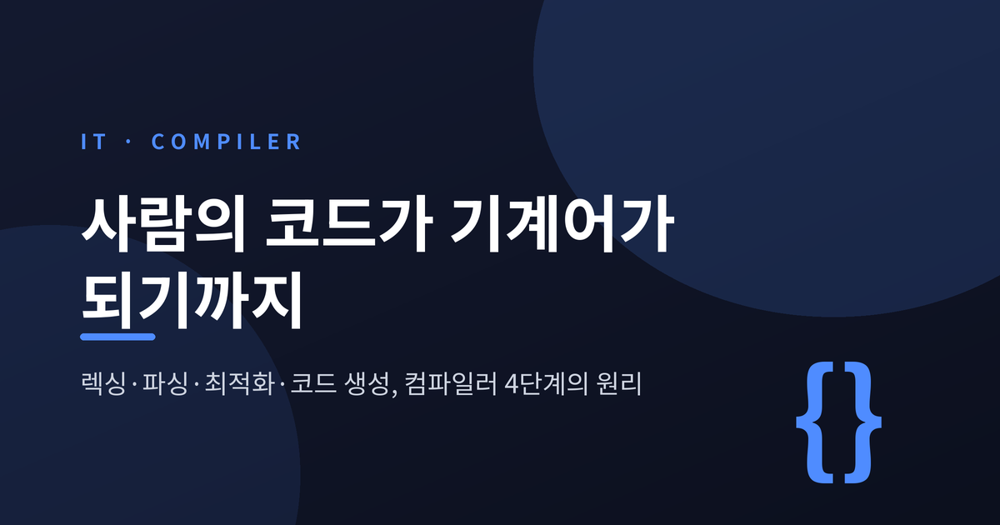
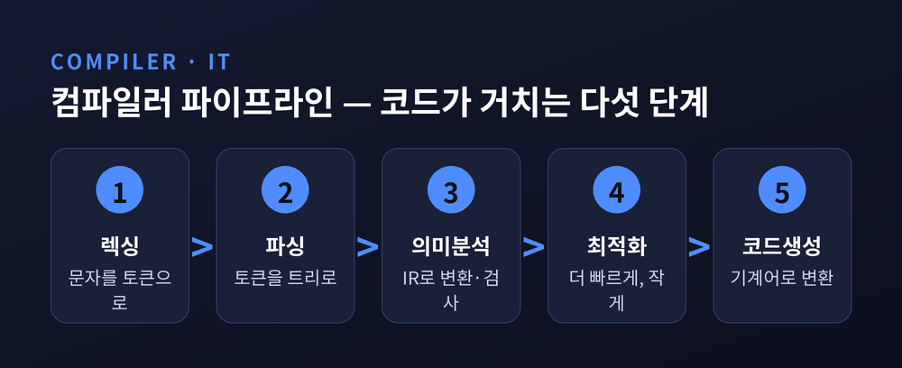
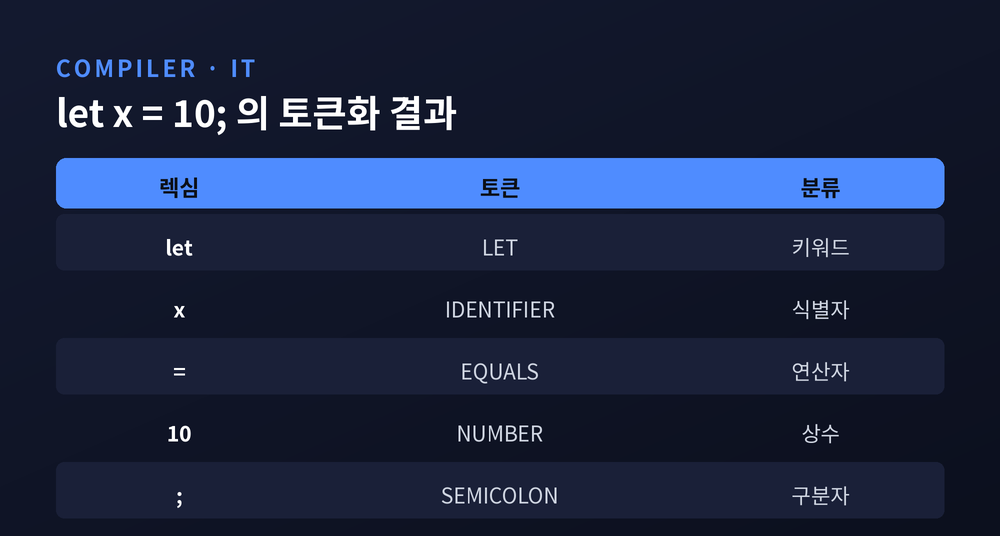
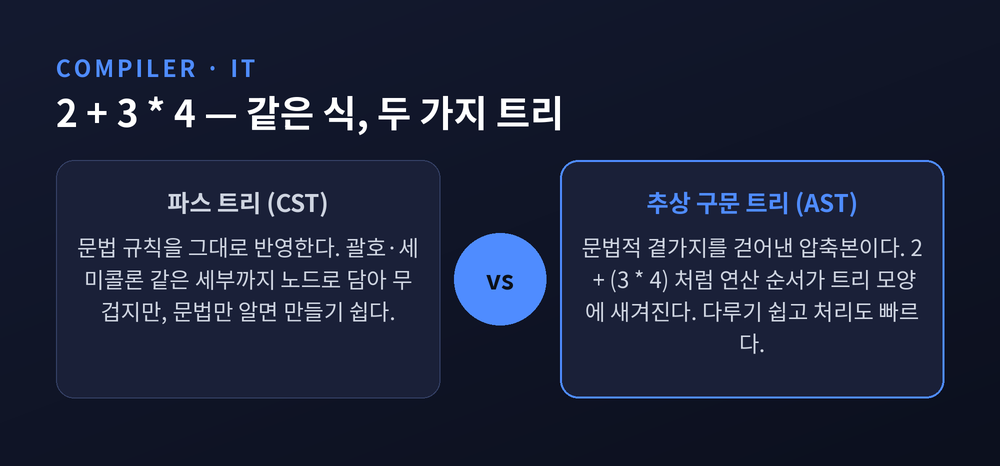
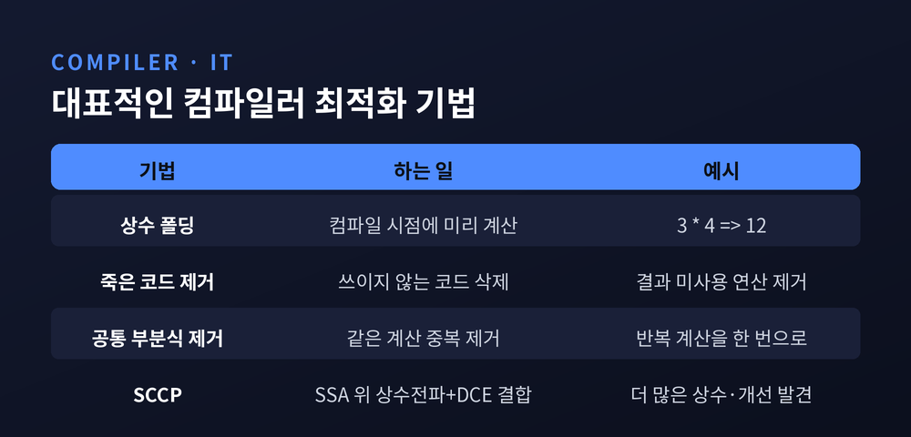
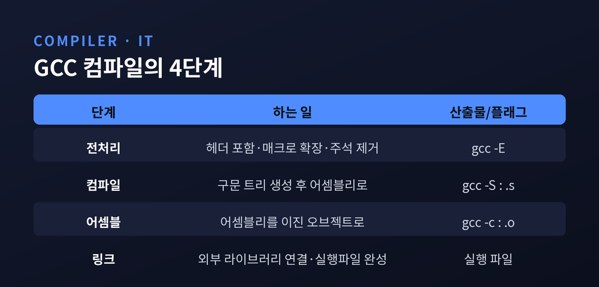

우리가 쓰는 프로그래밍 언어는 사람이 읽기 위한 것입니다. 반면 CPU가 실제로 실행하는 것은 0과 1로 된 기계어입니다. 이 둘 사이의 간극을 메우는 것이 컴파일러입니다.
이번 글에서는 컴파일러가 사람의 코드를 기계어로 바꾸는 과정을 렉싱·파싱·최적화·코드 생성의 흐름으로 정리해 보겠습니다. 추상적인 이름만 나열하지 않고, 실제 코드 한 줄이 어떻게 변형되는지 따라가 보겠습니다.
컴파일러는 코드를 한 번에 통째로 번역하지 않습니다. 여러 단계로 잘게 나눠 처리합니다.
순서는 대체로 이렇습니다. 렉싱(어휘 분석), 파싱(구문 분석), 의미 분석, 중간 표현(IR) 생성, 최적화, 코드 생성입니다. 각 단계는 앞 단계의 결과를 입력으로 받는 파이프라인으로 이어집니다.
크게 보면 세 덩어리입니다. 소스를 읽어 IR로 만드는 프런트엔드, IR 위에서 최적화하는 미들엔드, IR을 기계어로 낮추는 백엔드입니다. 앞쪽은 코드를 이해하는 '분석', 뒤쪽은 목표 코드를 만드는 '합성'으로 나누기도 합니다.

이 흐름을 머리에 넣고 각 단계를 하나씩 들여다보겠습니다.
컴파일의 첫 관문은 렉싱입니다. 어휘 분석이라고도 하고, 이 일을 하는 프로그램을 렉서 또는 토크나이저라 부릅니다.
렉서가 하는 일은 단순합니다. 소스 코드를 문자 하나하나의 스트림으로 읽어, 의미 있는 최소 덩어리인 렉심으로 묶습니다. 그리고 각 렉심을 토큰으로 분류합니다. 이 과정에서 공백과 주석은 버려집니다.
예를 들어 let x = 10; 이라는 한 줄을 렉서에 넣으면 다음처럼 쪼개집니다.
[LET, IDENTIFIER(x), EQUALS, NUMBER(10), SEMICOLON]
사람 눈에는 그냥 한 줄이지만, 기계에게는 다섯 개의 토큰입니다. 키워드 하나, 식별자 하나, 연산자 하나, 숫자 하나, 구분자 하나입니다. 토큰의 범주는 식별자, 연산자, 키워드, 상수, 구분자, 자료형 등으로 나뉩니다.

렉싱은 보통 한 번의 패스로 끝납니다. 무겁지 않은 단계입니다. 다만 여기서 나온 토큰의 정확성이 뒤 단계 전체의 토대가 됩니다.
토큰이 준비되면 파서가 그것을 받습니다. 파서의 임무는 납작한 토큰의 나열을 계층 구조를 가진 트리로 세우는 것입니다.
이때 기준이 되는 것이 문맥 자유 문법(CFG)입니다. 파서는 토큰의 배열이 이 문법 규칙을 따르는지 검사합니다. 규칙에 맞으면 트리를 만들고, 어긋나면 구문 오류를 냅니다. 괄호를 닫지 않았을 때 나는 그 오류가 바로 이 단계의 산물입니다.
파서가 만드는 트리에는 두 종류가 있습니다. 문법을 그대로 반영한 파스 트리(CST)와, 그것을 압축한 추상 구문 트리(AST)입니다. AST는 세미콜론이나 괄호 같은 문법적 곁가지를 걷어낸 단순화 버전입니다. 그만큼 다루기 쉽고 처리도 빠릅니다.
트리의 힘은 연산 순서를 담아낸다는 데 있습니다. 2 + 3 * 4 를 생각해 보겠습니다. 사람은 곱셈을 먼저 한다고 배웠습니다. 파서도 같은 규칙을 씁니다. 곱셈의 우선순위가 덧셈보다 높으므로, 파서는 3 * 4 를 먼저 하나의 노드로 묶습니다.
결과 트리는 2 + (3 * 4) 구조가 됩니다. 내부 노드는 연산자, 리프 노드는 피연산자입니다. 코드에 괄호를 쓰지 않아도 계산 순서가 트리 모양 안에 새겨지는 셈입니다. 이런 처리는 재귀 하강 파서로 어렵지 않게 구현됩니다.

문법이 맞다고 코드가 옳은 것은 아닙니다. "문자열에 숫자를 더하라"는 문장은 문법상 멀쩡하지만 뜻이 어긋납니다. 이런 것을 걸러내는 단계가 의미 분석입니다.
의미 분석기는 트리에 의미 정보를 덧붙이고 심볼 테이블을 만듭니다. 여기서 타입 검사, 이름과 정의를 잇는 객체 바인딩, 값이 제대로 할당됐는지 보는 검사 등이 이뤄집니다. 어긋나면 잘못된 프로그램으로 거부하거나 경고를 냅니다.
검사를 통과하면 코드는 중간 표현(IR)으로 옮겨집니다. IR은 특정 CPU에 매이지 않은, 어셈블리를 닮은 저수준 언어입니다. 프런트엔드와 백엔드 사이의 공용어라고 보시면 됩니다.
이 공용어가 왜 중요할까요. IR을 가운데 두면, 새 프로그래밍 언어를 지원할 때 프런트엔드만 새로 만들면 됩니다. 새 CPU를 지원할 때는 백엔드만 새로 만들면 됩니다. LLVM이 널리 쓰이는 이유가 여기에 있습니다. 언어와 하드웨어를 IR 하나로 갈라 놓았기 때문입니다.
IR에는 최적화를 돕는 성질을 입히기도 합니다. 대표적인 것이 SSA(정적 단일 할당)입니다. 각 변수가 딱 한 번만 값을 받도록 제약하는 방식입니다. 이렇게 하면 값이 어디서 와서 어디로 흐르는지가 또렷해집니다. 뒤이을 분석과 최적화가 한결 수월해집니다.
IR이 갖춰지면 미들엔드가 그 위에서 최적화를 시작합니다. 최적화는 한 번에 끝나지 않고, 여러 개의 '패스'가 IR을 반복해서 다듬는 방식으로 진행됩니다.
자주 쓰이는 기법 몇 가지만 짚겠습니다.
상수 폴딩은 컴파일 시점에 미리 계산할 수 있는 식을 앞당겨 계산합니다. 3 * 4 를 실행 중에 곱하지 않고, 아예 12 로 바꿔 둡니다. 죽은 코드 제거는 결과가 어디에도 쓰이지 않는 코드를 지웁니다. 공통 부분식 제거는 똑같은 계산을 두 번 하지 않도록 묶습니다.
SSA 위에서는 더 영리한 최적화가 가능합니다. 희소 조건부 상수 전파(SCCP)가 그 예입니다. 상수 전파와 죽은 코드 제거를 따로 돌리는 것보다, 함께 엮어 더 많은 상수 값과 더 많은 개선 기회를 찾아냅니다.

다만 최적화가 만능은 아닙니다. 지나친 최적화는 컴파일 시간을 늘리고, 때로는 디버깅을 어렵게 만듭니다. 그래서 컴파일러는 최적화 수준을 단계로 나눠 선택하게 해 둡니다. 무엇을 얼마나 다듬을지는 결국 트레이드오프의 문제입니다.
마지막은 백엔드의 몫입니다. 다듬어진 IR을 목표 CPU가 알아듣는 기계어로 바꿉니다. 코드 생성기는 크게 세 가지 일을 합니다.
첫째, 명령어 선택입니다. IR의 연산 하나하나를 그 CPU가 가진 실제 기계 명령으로 골라 대응시킵니다. 둘째, 레지스터 할당입니다. IR에서는 변수를 무한히 쓸 수 있지만, 실제 CPU의 레지스터는 몇 개뿐입니다. 이 한정된 그릇에 변수를 배치하는 일입니다. 레지스터에 잘 담을수록 느린 메모리 접근이 줄어 성능이 오릅니다. 셋째, 명령어의 실행 순서를 정합니다.
LLVM은 이 과정을 촘촘히 나눕니다. IR을 DAG라는 그래프로 바꾸고, 대상 CPU가 지원하는 자료형만 남기는 적법화를 거칩니다. 이어 패턴 매칭으로 기계 명령을 고르고, 물리 레지스터를 배정한 뒤, 최종 기계 코드를 방출합니다.

이 모든 과정을 GCC로 눈으로 확인할 수 있습니다. GCC는 전처리, 컴파일, 어셈블, 링크의 네 단계를 밟습니다. gcc -E 는 전처리까지만, gcc -S 는 어셈블리(.s)까지만, gcc -c 는 오브젝트 파일(.o)까지만 수행합니다. 플래그를 바꿔 가며 중간 산물을 하나씩 꺼내 볼 수 있는 셈입니다.
정리하면 이렇습니다. 컴파일러는 글자를 토큰으로 쪼개고(렉싱), 토큰을 트리로 세우고(파싱), 뜻을 검사해 중간 언어로 옮기고(의미 분석·IR), 그것을 다듬은 뒤(최적화), 기계어로 낮춥니다(코드 생성).
한 줄의 코드가 이렇게 여러 번 모습을 바꾼 끝에 CPU에 닿습니다. 그 사이의 변환은 눈에 보이지 않지만, 우리가 짠 코드가 빠르게 도는 이유는 대부분 이 보이지 않는 단계들 덕분입니다.
컴파일러는 결국 번역가입니다 — 사람의 언어와 기계의 언어, 그 먼 거리를 조용히 이어 주는 번역가입니다.